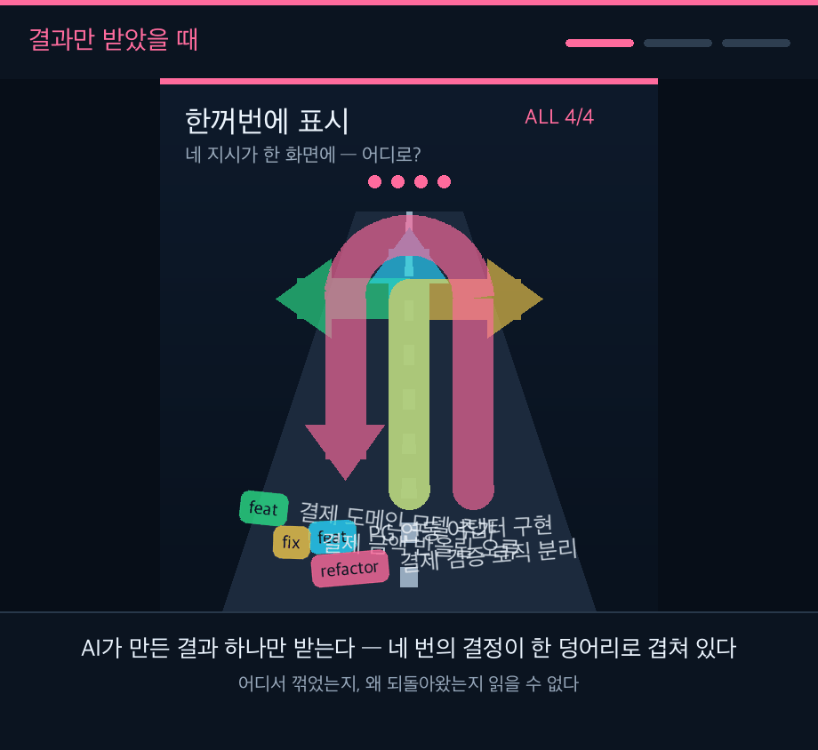

commit granularity · 딸깍의 시대
네 번의 커밋을 자동차 내비게이션 안내에 빗댄 그림입니다. 같은 그림을 두 번 보여줍니다 — 과정을 보기 전에 한 번, 보고 나서 한 번. 달라지는 것은 그림이 아니라 보는 사람입니다.

결과만
좌회전·직진·우회전·유턴이 한 화면에 겹칩니다. 어디서 꺾었는지, 왜 되돌아왔는지 짚을 수 없습니다.
과정
같은 네 결정을 차례로 봅니다. 앞 단계를 알기 때문에 다음 단계가 예측됩니다.
다시 결과
1막과 완전히 같은 그림인데 이제 첫 수부터 마지막 수까지 따라갑니다. 그림이 바뀐 게 아닙니다.